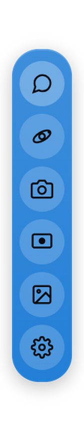
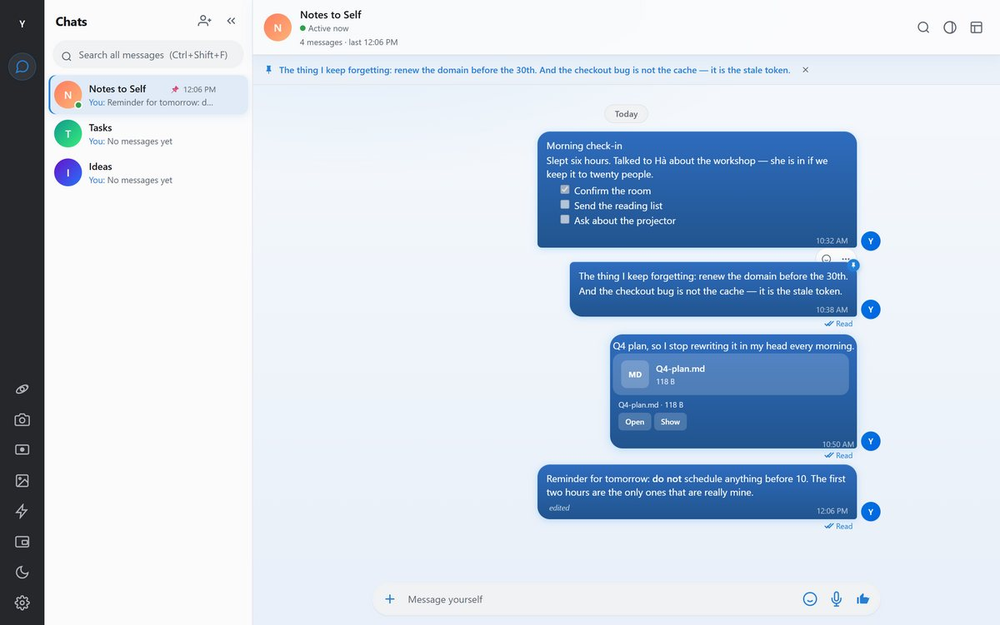
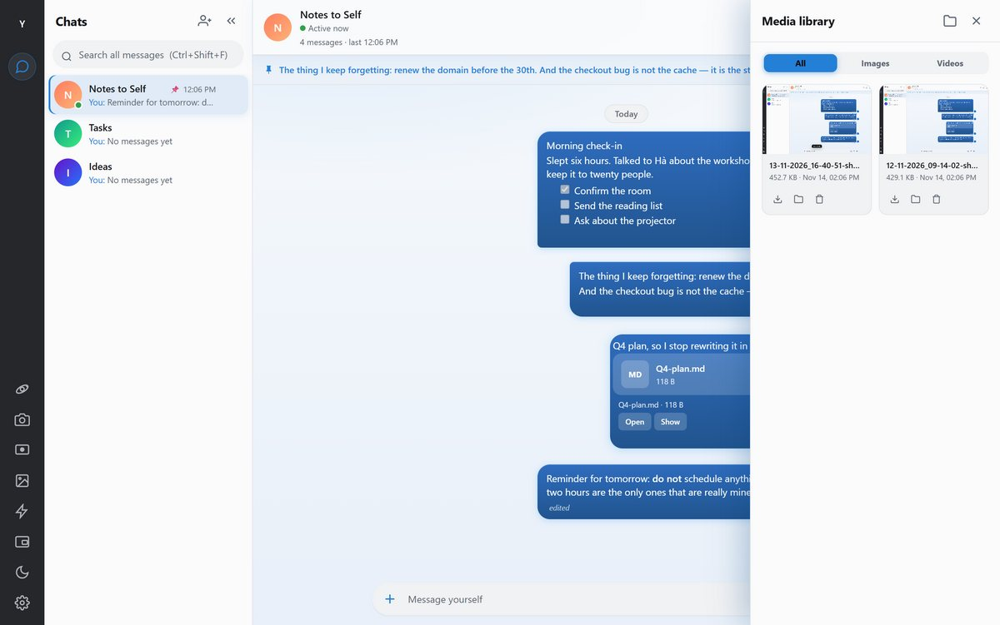
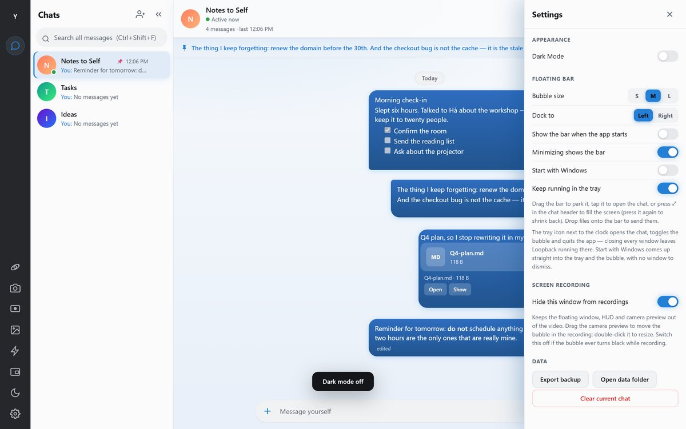
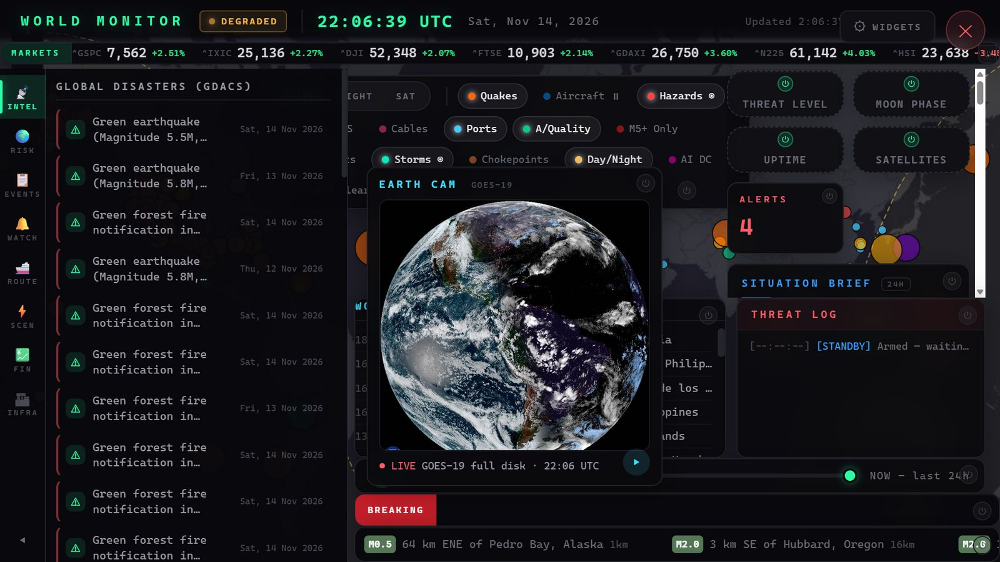
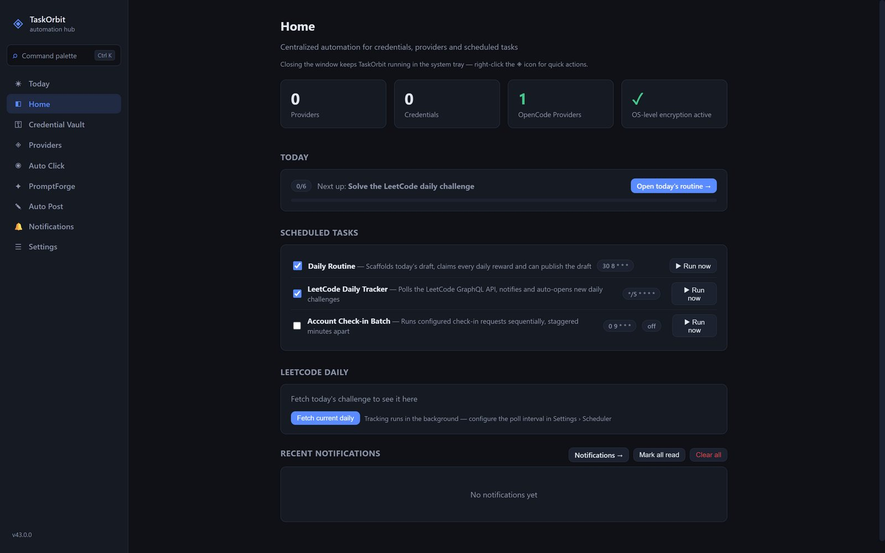
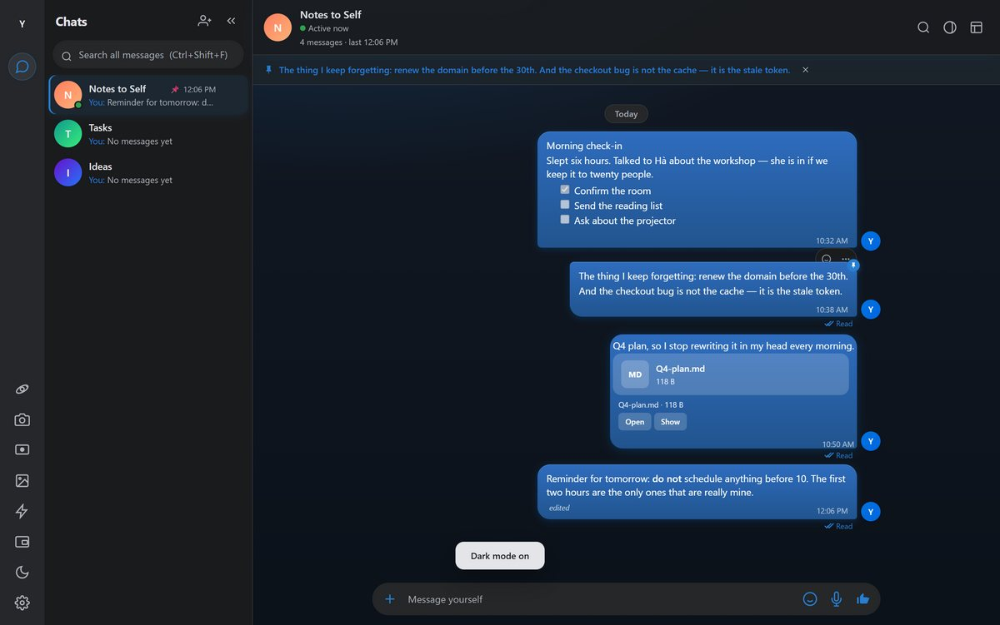
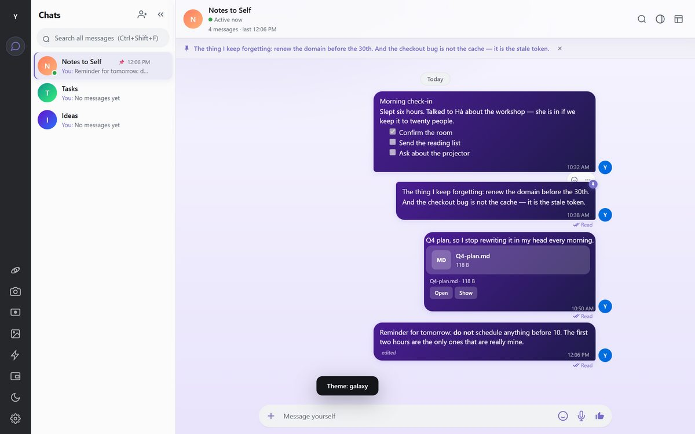

Loopback 1.9.10 · Windows 10 & 11 · MIT
Everything you say to yourself comes back.
A desktop room with one occupant. Write a note, drop a file, record a thought out loud, grab the thing on your screen — and find all of it again in a conversation that never leaves your machine.
- Account
- None
- Sync server
- None
- Data lives in
%APPDATA%\messenger-self-chat - Themes
- 16

01 · Your private space
One room, one occupant.
Loopback looks like a messenger because a messenger is a good place to put a thought. The difference is who is on the other end: nobody.
Every message is written to a JSON document on disk the moment you press Enter. Attachments
are copied into a local files/ folder, voice notes into voice/,
captures into captures/. Reopen the app a year later and the conversation is
still there, in the order you left it.
Keep separate chats for the things you don't want mixed — notes to self, ideas, tasks — pin the message you keep re-reading, and search every chat at once. Matching ignores Vietnamese accents, so gio finds giờ.
- Markdown notes: tables, checklists, quotes, code, images
- Any file type, with inline previews and players
- Reply, react, edit, pin, copy as Markdown
- A global quick-note popup on Ctrl+Alt+N
02 · Desktop presence
It waits at the edge of the screen.
The chat window can get out of the way without leaving you with an empty desktop.
Minimizing tucks Loopback into a narrow always-on-top bar docked to either edge — one straight column of round buttons for the chat, the automation workspace, a screenshot, a recording, the media library and recording settings. Drag it to move it; a click opens the mini-chat.
It behaves like a window that happens to float: the corner grip resizes it, the expand button fills the work area and gives it a taskbar slot, and dropping a file on it attaches that file. With Show the bar when the app starts on, it is already there when Windows finishes booting.
- Docks left or right, remembers its place, returns to a display that still exists
- Vertical tab or horizontal pill, three sizes
- Drag files onto it to attach them instantly
- Lives in the tray; closing every window does not quit it
03 · Design system
Sixteen rooms, one set of furniture.
Same layout, different light. Each theme keeps its hue but paints with a calmer, slate-mixed version of it, and every bubble was darkened until white text clears WCAG AA at both ends of the gradient.

Every image above is a capture of the real window in that theme — no recoloured mockups.
04 · Capture
Catch the thought, framed.
Screenshots and recordings are not a separate app you open. They sit on the rail and on the floating bar, and they end somewhere you can find them again.
- 01
Pick a region
The screen freezes, you drag a box, and the shot is saved before you let go. The floating bar is parked off every display for the grab, so a selection across the edge captures what is behind it.
- 02
Review it, right there
A small always-on-top card opens with the picture, its size and its dimensions: Download, Copy, Save as…, Show in folder, Delete. The note line prints a caption under the shot and bakes it into the file.
- 03
Or record it
Screen plus microphone and camera, with a HUD for pause, quality, frame rate and device choice. The camera bubble is burned into the video exactly where you parked it.
- 04
Keep the library
Every capture lands in the media library with inline playback and seekable recordings, named like a diary:
14-11-2026_18-05-09-shot.png.


05 · Beyond the conversation
A window on the world — when you open it.
World Monitor is a workspace that is deliberately not in the rail, the tray, the settings or the bubble. It is an experience secret, not a security boundary: the source is public, so it keeps the workspace out of the way rather than protecting it.

Public sources, no keys
USGS earthquakes, GDACS disasters, GDELT conflict reports, IODA outages, NOAA space weather, Open-Meteo weather and air quality, EONET, World Bank, CISA advisories, Launch Library 2, and the RSS feeds of listed newsrooms.
One owner per feed
The main process owns news, quakes and indices; the page owns the rest. Duplicate owners and an out-of-allowance aircraft feed were removed, cutting a measured 130-second session from 155 requests to 113.
Nothing of yours goes out
Requests go through an exact-hostname allowlist, HTTPS only, no credentials in the URL, a 12-second deadline, an 8 MB body cap and per-host cooldowns. Your messages, files and settings are never part of a request.
06 · Automation
When the desktop should do the repetitive part.

automation\.One app, one tray, one installer — two very different jobs.
The automation workspace bundles a scheduler, a credential vault encrypted with a machine-bound key, watchers with cooldowns, an auto clicker and key presser, a tab clicker over a dedicated Chrome profile, PromptForge, auto-posting and a phone control panel for a trusted Wi-Fi network.
It never touches the chat: the automation database, logs, browser profiles and IPC namespace are separate, and the chat window can only ask the workspace to open. Closing that window does not quit Loopback; the tray keeps the scheduler alive.
- Separate SQLite vault, separate preload, sandboxed renderer
- Global hotkeys registered through the host, never a second tray
- Windows-only features say so instead of failing silently
- One-way import of an older TaskOrbit vault, source left untouched
07 · Privacy and trust
Local means local. It does not mean encrypted.
This is the part most apps decorate. Loopback's architecture is small enough to describe exactly, so here it is without adjectives.
What Loopback does
- Writes your messages, chats, settings and captures to your Windows profile.
- Copies attachments into its own folder so a moved original does not break a note.
- Keeps a verified backup before the first schema migration, and never deletes it.
- Runs entirely offline for chat, search, themes, capture and the media library.
- Contacts public data sources only while the World Monitor window is open, and stops when it closes.
What Loopback does not do
- No Loopback account, sign-in or profile.
- No Loopback-hosted message synchronization.
- No telemetry, analytics or update check in the chat.
- No encryption of the chat store, the attachments or the captures.
- No claim that a local file is private from anyone who can use your Windows account.
The honest sentence
Anyone with access to your Windows account — or to an account with permission to read your AppData folder — can read these files. Loopback is private in the sense that it is yours and nobody else's server holds it. It is not a vault. If you need encryption at rest, use an encrypted Windows volume or a container around the data folder.
The one network feature. World Monitor fetches public feeds; the proxy allows HTTPS to an exact hostname list, rejects credentials in URLs, follows redirects only to other allowed hosts, enforces a deadline, a body cap and concurrency limit. None of your content is sent.
One exclusion worth naming. Live aircraft are paused: OpenSky's terms require a licence for this kind of use, so the layer says it is paused instead of fabricating traffic.
Security boundaries. Every window uses context isolation and no Node integration; disk access happens in the main process behind a per-window role and channel matrix; external links are validated and opened in the OS browser.
08 · Gallery
The same room, from different angles.


09 · Questions
Answers, without the brochure.
Something not covered here is probably in the repository's README, which documents the actual behaviour — including the limitations.
Read the READMEWhat exactly is Loopback?
A Windows desktop application that presents a private notebook as a chat with yourself. It is built with Electron, stores everything locally, and adds a floating bar, screen capture and two optional workspaces: a world monitor and an automation suite.
Which platforms are supported?
The installer is a Windows NSIS build, and Windows is the supported platform today. The source is Electron and much of it is cross-platform, but the packaged target, tray behaviour, login item, auto clicker and installer are Windows-specific.
Where is my data stored, and can I move it?
In %APPDATA%\messenger-self-chat: JSON documents plus files\, voice\ and captures\ folders. Settings offer an export to JSON and a button that opens the folder. Because it is plain files, you can copy the folder — but close the app first so a write cannot land mid-copy.
Is it encrypted?
The chat store, attachments and captures are not encrypted. They are ordinary files protected by your Windows account and disk permissions. The automation vault is separately encrypted with a machine-bound key, but that does not cover the chat. See the privacy section above.
Does anything leave my machine?
The chat does not: no account, telemetry, update check or sync. The World Monitor fetches public feeds while its window is open. The automation workspace can use the network only for features you configure, such as providers, posting or the phone panel.
What kind of files can I attach?
Any type. Images get thumbnails, audio and video get players, and everything else becomes a card with its name and size. Files are copied into the app's storage, so the note keeps working if the original moves.
How do the themes and dark mode interact?
They are independent. A theme sets the accent hue and the chat wallpaper; dark mode sets the surfaces. All sixteen themes are designed to be readable in both, and the app ships a contrast audit that measures the rendered styles.
How do I install or update it?
Build the installer from the repository with npm install and npm run build, then run the NSIS setup produced in dist\. Updating is the same installer; it replaces the installed copy in place and your data folder is untouched.
How do I open the World Monitor?
It is intentionally undocumented in the interface — the README explains the reasoning and does not publish the entry point. It is a focus feature, not a security boundary.
What does the automation workspace need?
A normal Windows session. Browser-based features expect Chrome or Edge installed; the auto clicker cannot operate on elevated windows unless the app is elevated too. Nothing is enabled until you configure it.
10 · Download
Take the room with you.
Loopback is an independent MIT-licensed project. There is no store listing and no account wall: the installer is built from this repository.
Windows 10 & 11 · NSIS
Build the installer
Clone the repository, install dependencies, and let electron-builder produce the setup executable. Your notes live outside the install folder, so reinstalling never touches them.
git clone https://github.com/Annguyen0410/Loopback.git
cd Loopback
npm install
npm run build
# → dist\Loopback Setup 1.9.10.exeNo binary is hosted on this page. The Releases page is the only place a published build would appear; if it is empty, build from source as shown above.
Run from source
Try it without installing
The app runs straight from the checkout — no installer, no build step:
npm start
# the E2E suites use throwaway profiles:
npm run test:e2eCheck what you are trusting
npm test— pure logic, no display, no networknpm run typecheck:automation— IPC contract typesnpm run test:e2e— real Electron windows- docs/ARCHITECTURE.md — ownership, data roots, adding a feature